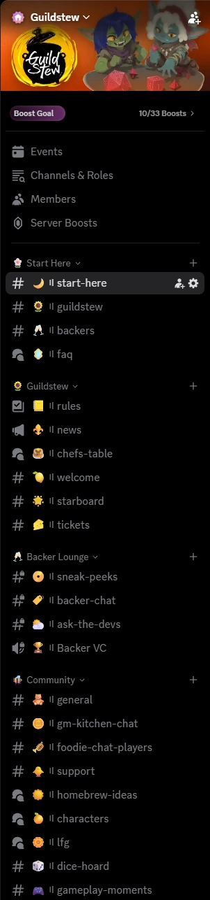
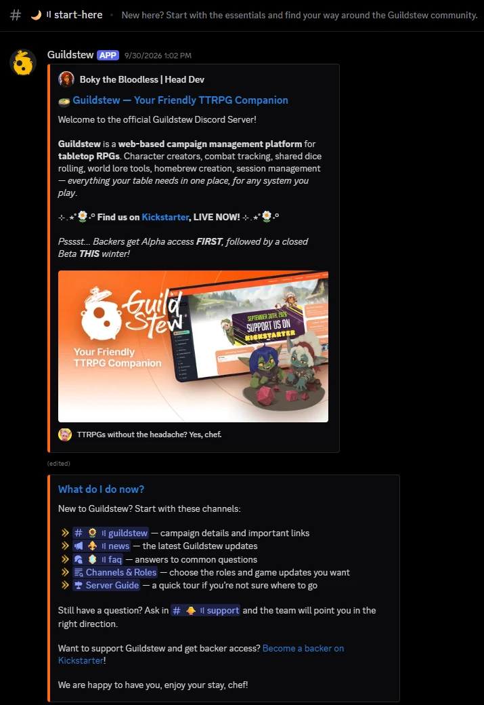
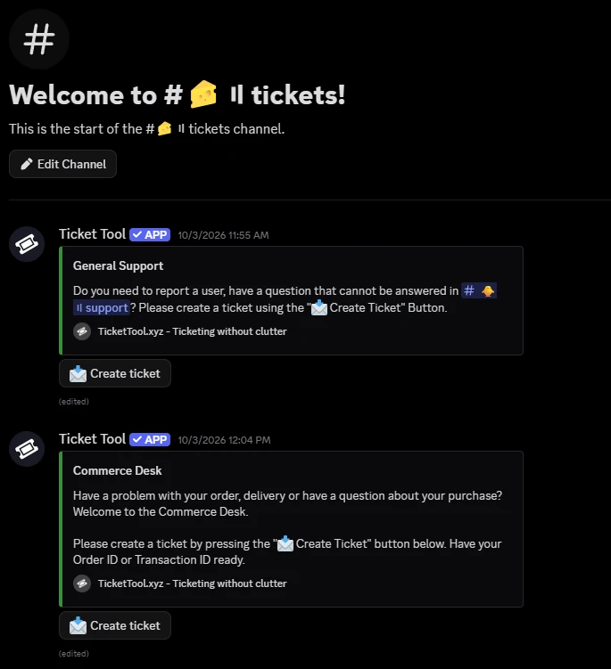
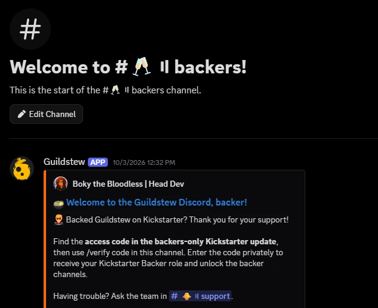
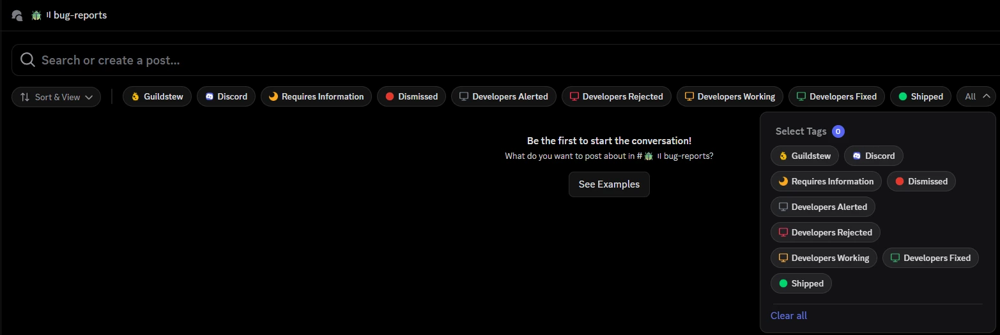
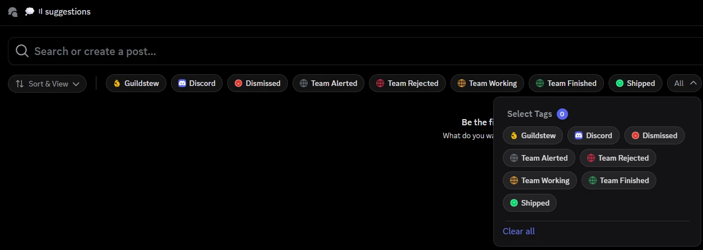
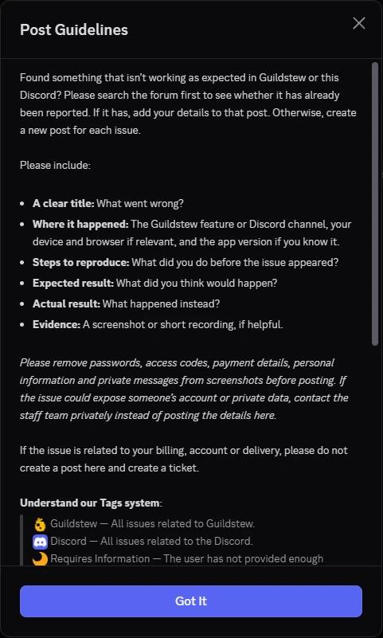

Guildstew · Discord Community Setup · 2026Case study D
A Discord built for Guildstew’s Kickstarter community.
Onboarding, backer access, support, feedback and staff operations — brought together in one server and handed over with practical documentation.
Client
Guildstew

Role
Discord Community Architect
Scope
Server implementation, community systems and staff handoff
Delivery
October 2026
01The brief
Guildstew needed a Discord that could support its Kickstarter community and give the team a practical foundation for ongoing management.
The work covered the member journey and the staff workflow: how people find the channels they need, how backers access their space, where support requests go, and how feedback reaches the team.
Rec.The finished server: channel structure and the #guildstew information channel.
02What I builtClick a screenshot to enlarge
Onboarding
A clearer way into the community
I configured Discord onboarding around member interests, with a focused option for people who only wanted the essential channels. The welcome and channel structure gave newcomers a clear starting point while keeping optional discussions available.


01Interest-based onboarding lets members choose the community spaces they want to see.
Backers & support
Backer access and support
I implemented backer verification and access to backer-only spaces, alongside two ticket routes: General Support and Commerce Desk. The Aetherial Ticket Support role gave designated staff access to both queues.

02Separate support routes help members reach the right team without posting account or purchase details publicly.

03Backers verify privately with the code from the backers-only Kickstarter update.
Feedback
Feedback that can be followed through
Bug reports and suggestions received dedicated forums, posting guidance and status tags. Staff could request missing information, escalate an issue and show progress through to a shipped change.
The staff playbook also established a routine for crediting members whose reports or suggestions contributed to updates.


04Forum posts keep each report together, with tags showing its current status.

05Posting guidance for bug reports, including what to leave out of screenshots.
Moderation
Moderation and staff responsibilities
I configured moderation and server protection systems, including filters, spam controls, alerts and logging. Administrative and bot dashboard access was limited to designated administrators, while moderation and ticket responsibilities were assigned through staff roles.
The handoff documented moderation commands, escalation, appeals and lockdown procedures.
Rec.The #rules channel: the community standards moderation works from.
After setup
A plan for what happens after setup
I created a reusable 14-day engagement plan covering conversations, events and community contributions. It gave the team a repeatable starting point for running the community after handoff.
14day engagement plan reusable
0102030405060708091011121314
Conversations
Events
Community contributions
03HandoffThe delivery included
Server handoff documentation
A staff playbook
A reusable 14-day engagement plan
Editable document versions
An optional 60-minute staff training call
The documentation covered the systems staff would maintain, including verification, support, forum statuses and moderation workflows.
04The delivered outcome
Guildstew received an implemented Discord setup with defined paths for joining, backer access, support and feedback, plus documentation for the team taking over.
On the record
This case study records the delivered systems and handoff. Long-term growth and engagement results have not yet been measured.
Preparing your community for a campaign or launch?
I can help build the Discord systems behind it — and document them so your team knows how to keep them running.